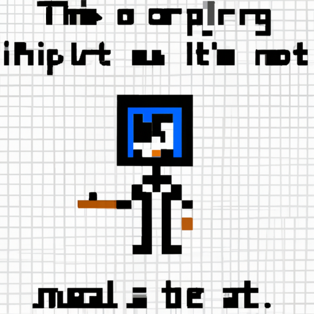

Why AI will never replace the artist
As technology continues to grow and evolve, the debate of whether or not AI will replace the artist is becoming more and more relevant. On one hand, AI can be used to create impressive artwork, but on the other hand, it still lacks the creativity and imagination of a human artist.
AI relies heavily on algorithms and data to create art, and while it can be used to generate visually pleasing work, it cannot match the inventiveness of a human artist. AI can't replicate the creative process that humans use to create art, because it relies too heavily on pre-programmed data and doesn't have the ability to think outside the box or explore new ideas.
AI will also never be able to replicate the emotion and feeling that a human artist can put into their work. Machines are not capable of understanding complex emotions, and so their artwork will never be able to really move an audience like a human artist can.
Finally, AI will never be able to replicate the passion and drive that a human artist has. While machines can be programmed to create artwork, they will never be able to have the same level of passion and commitment that a human artist has.
At the end of the day, AI will never be able to replace the artist. While it has its advantages, it still lacks the creativity, emotion, and passion of a human artist. Ultimately, it is human creativity and imagination that will always be the driving force behind great artwork.